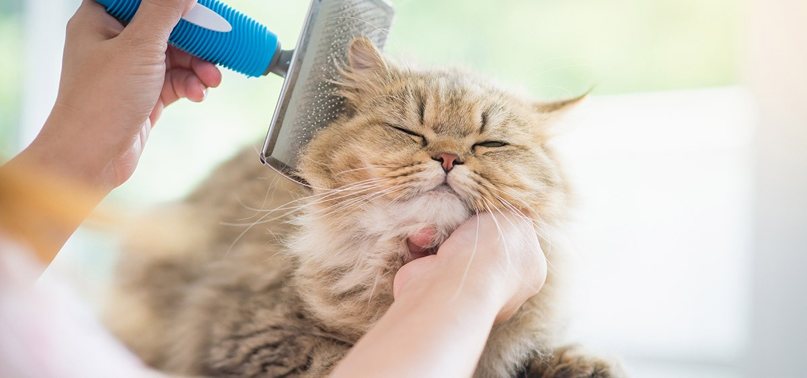
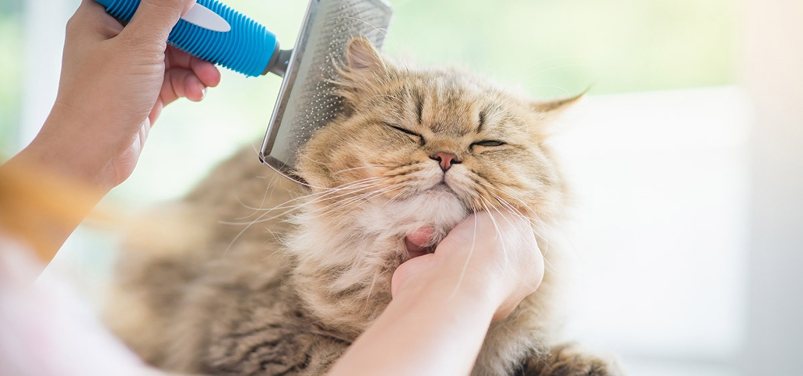

Historia de los Gatos
Los gatos forman parte de nuestras familias desde tiempos inmemoriales. Son increíbles compañeros con
los que acurrucarse juntos en el sofá, pasar ratos geniales jugando y tan divertidos que puedes
aburrir a tus compañeros de trabajo con mil anécdotas cada día, pero ¿cuánto sabemos realmente sobre
la historia de los gatos? Para muchos de nosotros, los orígenes de nuestros felinos son un completo
misterio y se sabe muy poco sobre el razonamiento detrás de ciertos comportamientos.
Para ayudarte a comprender mejor al tigre en miniatura que tienes en casa, hemos elaborado este
artículo que te cuenta todo, desde el origen de los gatos hasta por qué poseen ciertos instintos.
Se cree que todas las especies de gatos modernos provienen de un antepasado: el gato Montés de
Oriente Medio, Felis Sylvestris. Los investigadores basaron esta teoría en la similitud de sus
estructuras óseas.
Pocos animales han tenido una relación tan compleja con el ser humano como los gatos. Desde que
nuestras historias se cruzaron, lo que probablemente ocurrió hace más de 9.000 años, la
percepción del hombre sobre los felinos ha cambiado significativamente.
Si en la Antigüedad, eran venerados como encarnaciones de las divinidades, durante la Edad Media
sufrieron persecuciones masivas tras ser asociados a la práctica de brujería y a los movimientos
herejes. Y muchísimos años debieron pasar para que volvieran a ser adoptados como animales de
compañía y pudieran disfrutar plenamente del confort de un hogar tranquilo.
Si bien la historia del gato vaya más allá de su relación con el ser humano, es inevitable que
la interpretemos y la contemos a partir de nuestra experiencia y vivencia con estos mininos,
basándonos también en los aportes permitidos por los avances en ciencia y tecnología.


 

Cuidados Básicos
Alimentación
Debe ser de calidad y adaptada a las etapas de vida del gato. Puedes alimentarle con pienso, alimentos balanceados secos o alimento húmedo. Para asegurar un equilibrio nutricional, puedes combinar alimentos secos con húmedos y dejarle comida todo el día. También es importante que le des agua fresca y limpia en un recipiente separado, como una fuente, ya que a los gatos les encanta beber de corrientes de agua.
Aseo
Los gatos son animales muy limpios y se acicalan continuamente a lo largo del día. Sin embargo, puedes ayudarles a evitar que se formen bolas de pelo cepillando su pelo periódicamente. También puedes bañarlos una vez al mes con champú específico para gatos, pero ten cuidado con la temperatura del agua y trata a tu gato con cuidado para que se sienta a gusto.
Uñas
Debes cortarle las uñas habitualmente para evitar que las tenga demasiado largas y le haga destrozos a tu casa. Puedes usar rascadores para animarle a usarlos en vez de colgarse de la cortina. Si no puedes cortarle las uñas tú mismo, puedes llevarlo al veterinario.
Ojos
Los ojos de los gatos son muy delicados y necesitas limpiarlos cuidadosamente, dedicando mayor importancia a la parte interna.
Vacunación y desparasitación
Es fundamental vacunar y desparasitar a tu gato para que crezca sano. A partir de los 2 meses de vida se debe iniciar la vacunación para fortalecer el desarrollo del sistema inmunológico del gatito, y esto debe ser llevado a cabo por un veterinario cualificado.
Curiosidades
Con una apariencia elegante y extremadamente inteligente, los gatos se han convertido en animales domésticos que se ganaron el corazón de muchos tutores. Solo son superados por los perros en la carrera por ser el "mejor amigo del hombre". Si tienes un felino por compañía, vale la pena conocer algunos datos sobre ellos y comprender mejor su comportamiento.
- Los gatos han estado con los humanos durante casi 10 000 años Los gatos viven entre los humanos desde las primeras civilizaciones.
- Los primeros gatos domesticados eran hábiles cazadores
- ¿Eran los gatos dioses egipcios?
- La adaptación del maullido de los gatos para comunicarse con los humanos
- El parpadeo lento es el equivalente a una sonrisa para gatos
Los estudios demuestran que estos pequeños felinos acompañan a la humanidad durante miles de años. Un artículo publicado en la revista Science en 2004 informa sobre el descubrimiento de un esqueleto de gato desenterrado en el sur de Chipre. El esqueleto completo del animal se asoció estrechamente con un entierro humano de 9 500 años de antigüedad, lo que sugiere que el felino de ocho meses fue domesticado.
Se cree que la domesticación de los gatos estuvo motivada por la gran habilidad de estos animales para cazar roedores y otras plagas. En 2013, un equipo de arqueólogos encontró ocho huesos de gato en una excavación en un antiguo asentamiento conocido como Quanhucun en el centro de China. Los huesos, que datan de hace unos 5 300 años, se encontraron junto con madrigueras de ratas en depósitos de granos, tal como informó un artículo publicado en la revista Science en diciembre de ese año. Según los investigadores, los hallazgos indican que los animales ayudaron a los habitantes con el problema de la plaga al cazar roedores.
Estos felinos se encuentran entre los animales más emblemáticos del arte y la cultura del
antiguo Egipto. Según el Centro de Investigación Estadounidense en Egipto (ARCE), los egipcios
admiraban a los gatos por su naturaleza compleja y dual. Para ellos, los gatos combinaban
gracia, fecundidad y mansedumbre, con agresividad, agilidad y peligro.
Pero es importante señalar que los egipcios no adoraban a los gatos. En cambio, creían que
ciertas deidades, a menudo representadas con rasgos felinos, compartían rasgos de carácter con
los animales, explica ARCE.
Bastet es probablemente la diosa felina más conocida de Egipto. Las ofrendas hechas a esta diosa
seguían con deseos de salud e hijos o de vida y protección.
Un estudio sobre el comportamiento de los gatos domésticos, cuyo artículo fue publicado en 2009 en la revista científica Current Biology, demuestra que los gatos aprendieron a vocalizar un sonido específico para “entrenar” a sus compañeros humanos. La publicación sugiere que los animales usan una combinación específica de maullidos y ronroneos para llamar la atención de sus dueños, generalmente pidiendo comida. Según los investigadores, la vocalización puede estar activando la respuesta natural del ser humano al llanto de un bebé, ya que el maullido del gato tiene una frecuencia similar al llanto.
Los científicos han descubierto que cerrar los ojos lentamente es la mejor manera de construir una relación con los gatos. Los expertos en comportamiento animal de la Universidad de Sussex realizaron dos experimentos para un estudio publicado en Nature's Scientific Reports en 2020. Los resultados indicaron que la técnica de parpadeo lento imita lo que se conoce como la sonrisa de un gato y parece ayudar a formar un vínculo entre los animales y sus dueños humanos.